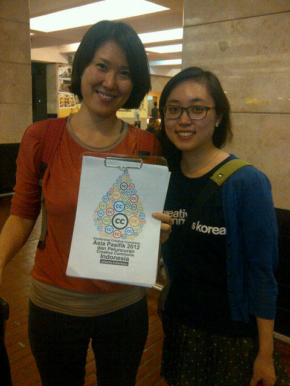

Selamat Datang di Jakarta Creative Commons Asia Pasifik!
Pada tanggal 9 November 2012 kemarin, telah tiba teman-teman dari afiliasi-afiliasi Creative Commons Asia Pasifik yang akan menghadiri Regional Meeting tahun 2012, yang juga merupakan rangkaian acara dari Konferensi Creative Commons Asia Pasifik 2012 dan Peluncuran Creative Commons Indonesia.

Selamat datang CC Korea!
Selain menyambut kedatangan perwakilan afiliasi-afiliasi dari Creative Commons Asia Pasifik, kemarin malam telah diadakan makan malam bersama afiliasi-afiliasi Creative Commons Asia Pasifik yang telah tiba di SKYE, Menara BCA.
Seluruh peserta Regional Meeting yang akan berkumpul di Hotel Grand Sahid Jaya berjumlah 21 orang, masing-masing berasal dari CC South Korea, CC Hongkong, CC Taiwan, CC China Mainland, CC Australia, CC New Zealand, CC Malaysia, CC Philippines, CC Singapore, CC Vietnam, serta CC HQ. Selain itu, Prof. Anne Fitzgerald juga menyempatkan hadir pada Regional Meeting kali ini.
Dan Kathleen Walsh, key note speaker pada kegiatan diskusi publik tanggal 11 November 2012 yang merupakan bagian dari rangkaian acara Konferensi Creative Commons Asia Pasifik 2012 dan Peluncuran Creative Commons Indonesia.
Ikuti terus twitter kami dengan tagar #CCIDAP2012 untuk mengetahui perkembangan langsung dari kegiatan Konferensi Creative Commons Asia Pasifik 2012 dan Peluncuran Creative Commons Indonesia.
Salam, pokoknya Creative Commons!
Tags:
Oleh: Alifia Qonita Sudharto
10 Nov 2012Kategori:
Berita Terbaru
- Lokakarya Hak Cipta dan Lisensi Creative Commons di Pekanbaru
- Pengumuman Resmi: Hasil Akhir Training of Trainers Creative Commons Indonesia
- Literatur tentang Model Bisnis Terbuka "Made With CC"
- Data dan Artikel Ilmiah Terbuka dari PLOS!
- Konten Format Model 3 Dimensi Berilsensi CC di Platform Sketchfab